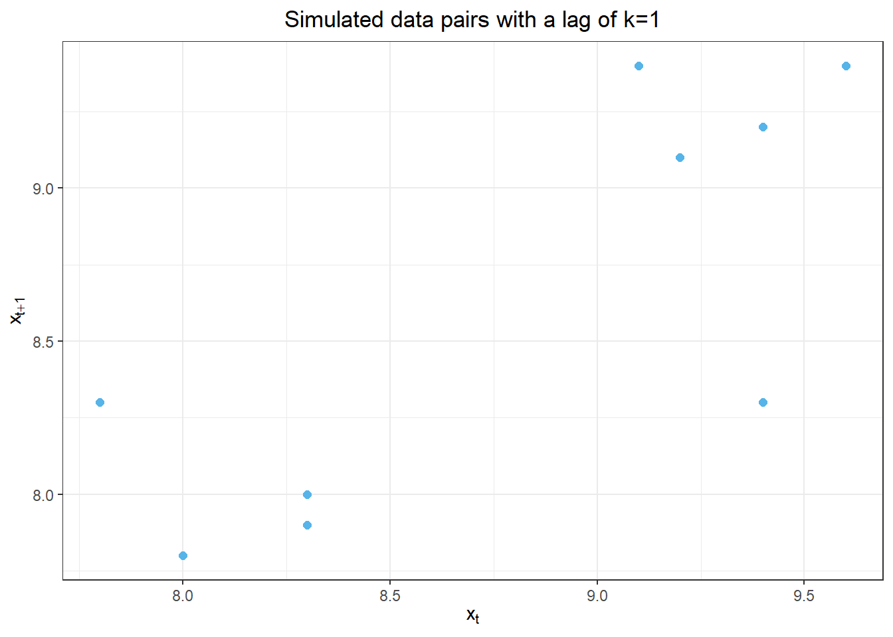
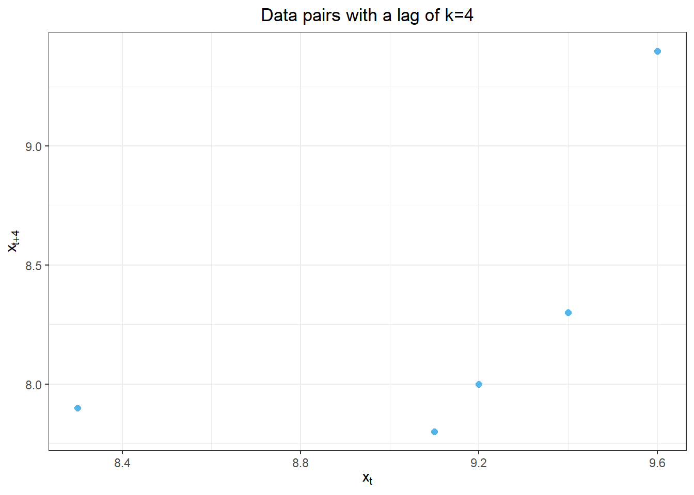

Chapter 2: Correlation
Lesson 2 (60 mins): Autocorrelation Concepts
Objectives:
Define covariance, autocovariance, autocorrelation
Explain autocorrelation in time series
Agenda:
Introduction (5 mins)
- Motivate studying autocorrelation
TYSON: PLEASE BUILD A SHINY APP IN WHICH STUDENTS CAN PRESS A BUTTON TO REFRESH THE IMAGE BELOW AND OBSERVE DIFFERENT REALIZATIONS. PLEASE MAKE SLIDERS FOR THE PARAMETERS n (from 10 to 500 by 10), a (from 0 to 1 by 0.005), and n_reps (from 1 to 9 by 1).
Use the figure above to explain the following vocabulary terms:
Ensemble of a time series
Realization of a time series
If a time series displays an upward trend, can we conclude that trend will continue in the same direction? Why or why not?
Hands-on Exercise – Exploring Sample Autocorrelation (40 min)
In the previous lesson, we computed the sample covariance and sample correlation coefficient between two independent variables. When working with time series, the observations are not independent. There is often a relationship between sequential observations. We will compute the autocovariance function and autocorrelation function for a time series.
Note: the prefix “auto” comes from a Greek root meaning “self.” We will be finding the autocovariance and correlation of a time series with itself. First, we start with a lag of 1. With a lag of 1 the corresponding values of the time series that are being compared are shifted by one time unit. Then, we will consider any integer lag: lag \(k\).
(Lag 1) Sample Autocovariance
We will now find the autocovariance between the values in a time series (\(x = x_t\)) and the same values, with a lag of one time period (\(y = x_{i+1}\)). We denote the lag by the letter \(k\), so we have a lag of \(k=1\).
offset_value <- 1
cov_df <- get_data_for_cov_table(offset = offset_value)
cov_table <- cov_df %>%
make_cov_table_df(offset = offset_value, decimals_1st_order = 1, decimals_2nd_order = 2)
cov_table %>%
display_cov_table()| t | x_t | x_{t+k} | x_t-mean(x) | (x_t-mean(x))^2 | x_{t+k}-mean(x) | (x_{t+k}-mean(x))^2 | (x-mean(x))(x_{t+k}-mean(x)) |
|---|---|---|---|---|---|---|---|
| 1 | 9.6 | 9.4 | 0.9 | 0.81 | 0.7 | 0.49 | 0.63 |
| 2 | 9.4 | 9.2 | 0.7 | 0.49 | 0.5 | 0.25 | 0.35 |
| 3 | 9.2 | 9.1 | 0.5 | 0.25 | 0.4 | 0.16 | 0.20 |
| 4 | 9.1 | 9.4 | 0.4 | 0.16 | 0.7 | 0.49 | 0.28 |
| 5 | 9.4 | 8.3 | 0.7 | 0.49 | 0.4 | 0.16 | 0.28 |
| 6 | 8.3 | 8.0 | 0.4 | 0.16 | 0.7 | 0.49 | 0.28 |
| 7 | 8.0 | 7.8 | 0.7 | 0.49 | 0.9 | 0.81 | 0.63 |
| 8 | 7.8 | 8.3 | 0.9 | 0.81 | 0.4 | 0.16 | 0.36 |
| 9 | 8.3 | 7.9 | 0.4 | 0.16 | 0.8 | 0.64 | 0.32 |
| 10 | 7.9 | — | 0.8 | 0.64 | — | — | — |
| sum | 87.0 | 77.4 | 0.0 | 4.46 | 0.9 | 3.65 | 2.77 |
ggplot(cov_df %>% na.omit(), aes(x = x, y = y)) +
geom_point(size = 2, colour= "#56B4E9") +
# scale_color_manual(values = c("#E69F00", "#56B4E9"),
# labels = c(expression((x-bar(x))(y-bar(y))<0),
# expression((x-bar(x))(y-bar(y))>0))) +
# geom_vline(xintercept = mean(cov_dat$x), color = "#009E73") +
# geom_hline(yintercept = mean(cov_dat$y), color = "#009E73") +
xlab(expression(x[t])) +
ylab(expression(x[t+1])) +
theme_bw() +
ggtitle("Simulated data pairs with a lag of k=1") +
theme(plot.title = element_text(hjust = 0.5)) 
# Obtain the number of data values.
n <- nrow(cov_df)In this case, the second variable is \(x_{t+1}\), where \(t>1\). the autocovariance of \(x_t\) and \(x_{t+1}\) is:
FIX THIS
FIX THIS
FIX THIS
FIX THIS
FIX THIS \[ cov(x,y) = \frac{\sum\limits_{t=1}^{9}(x_t-\bar x)(x_{t+k}-\bar x)}{n} = \frac{2.77}{9} = 0.3078 \]
This is the autocovariance of \(x\) with itself, but with a lag of 1 time unit. This is called the lag 1 autocovariance or the autocovariance of \(x\) with lag 1.
- What does the lag 1 autocovariance measure?
(Lag 1) Autocorrelation Coefficient
We can compute the lag 1 autocorrelation or the autocorrelation of \(x\) with lag 1 by dividing the autocovariance by the square roots of the variances of \(x_t\) and \(x_{t+1}\):
\[ \begin{align*} cor(x,y) &= \frac{cov(x,y)}{\sqrt{s_x} \cdot \sqrt{s_y}} = \frac{ \frac{\sum\limits_{t=1}^{9}(x_t-\bar x)(x_{t+k}-\bar x)}{n} }{ \sqrt{ \frac{\sum\limits_{t=1}^{10}(x_t-\bar x)^2}{n} } \sqrt{ \frac{\sum\limits_{t=1}^{9}(x_{t+k}-\bar x)^2}{n} } } \\ &= \frac{ \sum\limits_{t=1}^{9}(x_t-\bar x)(x_{t+k}-\bar x) }{ \sqrt{ \sum\limits_{t=1}^{10}(x_t-\bar x)^2 } \sqrt{ \sum\limits_{t=1}^{9}(x_{t+k}-\bar x)^2 } } = \frac{ 2.77 }{ \sqrt{ 4.46 } \sqrt{ 3.65 } } = 0.7801 \end{align*} \]
\[ \begin{align*} DUH_cor(x,y) &= \frac{c_k}{c_0} = \frac{ \frac{1}{n} \sum\limits_{t=1}^{9}(x_t-\bar x)(x_{t+k}-\bar x) }{ \frac{1}{n} \sum\limits_{t=1}^{10}(x_t-\bar x)^2 } \\ &= \frac{ \sum\limits_{t=1}^{9}(x_t-\bar x)(x_{t+k}-\bar x) }{ \sum\limits_{t=1}^{10}(x_t-\bar x)^2 } = \frac{ 2.77 }{ \sqrt{ 4.46 } \sqrt{ 3.65 } } = 0.7801 \end{align*} \]
- What does the lag 1 autocorrelation measure?
We will summarize these values in a table:
| lag | autocovariance | autocorrelation |
|---|---|---|
| 1 | 0.3562 | 0.7801 |
offset_value <- 2
cov_df <- get_data_for_cov_table(offset = offset_value)
cov_table <- cov_df %>%
make_cov_table_df(offset = offset_value, decimals_1st_order = 1, decimals_2nd_order = 2)
cov_table %>%
# make_blank_row_in_cov_table(3) %>%
# make_blank_row_in_cov_table(4) %>%
# make_blank_row_in_cov_table(5) %>%
# make_blank_row_in_cov_table(6) %>%
display_cov_table()| t | x_t | x_{t+k} | x_t-mean(x) | (x_t-mean(x))^2 | x_{t+k}-mean(x) | (x_{t+k}-mean(x))^2 | (x-mean(x))(x_{t+k}-mean(x)) |
|---|---|---|---|---|---|---|---|
| 1 | 9.6 | 9.2 | 0.9 | 0.81 | 0.5 | 0.25 | 0.45 |
| 2 | 9.4 | 9.1 | 0.7 | 0.49 | 0.4 | 0.16 | 0.28 |
| 3 | 9.2 | 9.4 | 0.5 | 0.25 | 0.7 | 0.49 | 0.35 |
| 4 | 9.1 | 8.3 | 0.4 | 0.16 | 0.4 | 0.16 | 0.16 |
| 5 | 9.4 | 8.0 | 0.7 | 0.49 | 0.7 | 0.49 | 0.49 |
| 6 | 8.3 | 7.8 | 0.4 | 0.16 | 0.9 | 0.81 | 0.36 |
| 7 | 8.0 | 8.3 | 0.7 | 0.49 | 0.4 | 0.16 | 0.28 |
| 8 | 7.8 | 7.9 | 0.9 | 0.81 | 0.8 | 0.64 | 0.72 |
| 9 | 8.3 | — | 0.4 | 0.16 | — | — | — |
| 10 | 7.9 | — | 0.8 | 0.64 | — | — | — |
| sum | 87.0 | 68.0 | 0.0 | 4.46 | -1.6 | 3.16 | 1.79 |
| lag | autocovariance | autocorrelation |
|---|---|---|
| 1 | 0.3562 | 0.7801 |
| 2 |
# cov_df3 <- get_data_for_cov_table(offset = 3)
# cov_df3 %>%
# make_cov_table_df(offset = 3) %>%
# display_cov_table()
offset_value <- 3
cov_df <- get_data_for_cov_table(offset = offset_value)
cov_table <- cov_df %>%
make_cov_table_df(offset = offset_value, decimals_1st_order = 1, decimals_2nd_order = 2)
cov_table %>%
display_cov_table()| t | x_t | x_{t+k} | x_t-mean(x) | (x_t-mean(x))^2 | x_{t+k}-mean(x) | (x_{t+k}-mean(x))^2 | (x-mean(x))(x_{t+k}-mean(x)) |
|---|---|---|---|---|---|---|---|
| 1 | 9.6 | 9.1 | 0.9 | 0.81 | 0.4 | 0.16 | 0.36 |
| 2 | 9.4 | 9.4 | 0.7 | 0.49 | 0.7 | 0.49 | 0.49 |
| 3 | 9.2 | 8.3 | 0.5 | 0.25 | 0.4 | 0.16 | 0.20 |
| 4 | 9.1 | 8.0 | 0.4 | 0.16 | 0.7 | 0.49 | 0.28 |
| 5 | 9.4 | 7.8 | 0.7 | 0.49 | 0.9 | 0.81 | 0.63 |
| 6 | 8.3 | 8.3 | 0.4 | 0.16 | 0.4 | 0.16 | 0.16 |
| 7 | 8.0 | 7.9 | 0.7 | 0.49 | 0.8 | 0.64 | 0.56 |
| 8 | 7.8 | — | 0.9 | 0.81 | — | — | — |
| 9 | 8.3 | — | 0.4 | 0.16 | — | — | — |
| 10 | 7.9 | — | 0.8 | 0.64 | — | — | — |
| sum | 87.0 | 58.8 | 0.0 | 4.46 | -2.1 | 2.91 | 0.46 |
| lag | autocovariance | autocorrelation |
|---|---|---|
| 1 | 0.3562 | 0.7801 |
| 2 | ||
| 3 | 0.1817 | 0.4845 |
# cov_df4 <- get_data_for_cov_table(offset = 4)
# cov_df4 %>%
# make_cov_table_df(offset = 4) %>%
# display_cov_table()
offset_value <- 4
cov_df <- get_data_for_cov_table(offset = offset_value)
cov_table <- cov_df %>%
make_cov_table_df(offset = offset_value, decimals_1st_order = 1, decimals_2nd_order = 2)
cov_table %>%
display_cov_table()| t | x_t | x_{t+k} | x_t-mean(x) | (x_t-mean(x))^2 | x_{t+k}-mean(x) | (x_{t+k}-mean(x))^2 | (x-mean(x))(x_{t+k}-mean(x)) |
|---|---|---|---|---|---|---|---|
| 1 | 9.6 | 9.4 | 0.9 | 0.81 | 0.7 | 0.49 | 0.63 |
| 2 | 9.4 | 8.3 | 0.7 | 0.49 | 0.4 | 0.16 | 0.28 |
| 3 | 9.2 | 8.0 | 0.5 | 0.25 | 0.7 | 0.49 | 0.35 |
| 4 | 9.1 | 7.8 | 0.4 | 0.16 | 0.9 | 0.81 | 0.36 |
| 5 | 9.4 | 8.3 | 0.7 | 0.49 | 0.4 | 0.16 | 0.28 |
| 6 | 8.3 | 7.9 | 0.4 | 0.16 | 0.8 | 0.64 | 0.32 |
| 7 | 8.0 | — | 0.7 | 0.49 | — | — | — |
| 8 | 7.8 | — | 0.9 | 0.81 | — | — | — |
| 9 | 8.3 | — | 0.4 | 0.16 | — | — | — |
| 10 | 7.9 | — | 0.8 | 0.64 | — | — | — |
| sum | 87.0 | 49.7 | 0.0 | 4.46 | -2.5 | 2.75 | 0.32 |
| lag | autocovariance | autocorrelation |
|---|---|---|
| 1 | 0.3562 | 0.7801 |
| 2 | ||
| 3 | 0.1817 | 0.4845 |
| 4 | 0.1693 | 0.6312 |
Compute c_k and r_k with a few different lag (k) values
Finish a partially-created correlogram with the r_k values computed
Show a correlogram with seasonal data with a period of one year (chocolate data?). What do the spikes tell us?
acf(cov_df$x)$acf
, , 1
[,1]
[1,] 1.00000000
[2,] 0.62107623
[3,] 0.40134529
[4,] 0.10313901
[5,] -0.07174888
[6,] -0.45291480
[7,] -0.39910314
[8,] -0.33408072
[9,] -0.20627803
[10,] -0.16143498values_text <- paste0("x_t <- c(",paste(cov_df$x, collapse = ", "),")")
values_text[1] "x_t <- c(9.6, 9.4, 9.2, 9.1, 9.4, 8.3, 8, 7.8, 8.3, 7.9)"Recap (5 mins)
- Review objectives and key points
Formally define autocovariance, autocorrelation
Explain autocorrelation in time series context
TYSON: PLEASE BUILD A SHINY APP IN WHICH STUDENTS CAN CHANGE THE AUTOCORRELATION COEFFICIENT (SLIDER FOR AUTOCORRELATION FROM 0 TO 1) AND WATCH THE GRAPH UPDATE IN REAL TIME
library(tidyverse)
library(zoo)
Attaching package: 'zoo'The following object is masked from 'package:tsibble':
indexThe following objects are masked from 'package:base':
as.Date, as.Date.numeric# Generate data
set.seed(101)
x <- 1:100*0.5 + arima.sim(n=100-1, list(ar=0.1, ma=0.2, order=c(1,1,1)))
e <- rnorm(100, 0, 2.5)
y <- 1:100*0.5 + e
z <- zoo(y, order.by = 1:100)
# Create data frame
df <- data.frame(
time = 1:100,
x = x,
z = coredata(z)
)
# Plot
ggplot(df, aes(x = time)) +
geom_line(aes(y = x, color = "X")) +
geom_line(aes(y = z, color = "Z")) +
labs(title="X vs Z Series",
x="Time",
y="Values",
color="Series") +
theme_bw()Don't know how to automatically pick scale for object of type <ts>. Defaulting
to continuous.
Example Analysis (15 mins)
Walk through sample autocorrelation analysis
Recap (20 mins)
Review objectives and key concepts
Clarify questions on autocorrelation
Assessment:
- Write definitions of autocovariance and autocorrelation
Lesson 2 (60 mins): Correlograms
Objectives:
Compute sample autocorrelations
Make and interpret correlogram plots
Agenda:
Introduction (5 mins)
- Introduce correlogram plots
Lecture (15 mins)
Demonstrate computing acf/pacf in R
Explain interpreting correlogram plots
Hands-on Exercise (25 mins)
Compute acf/pacf on sample data
Make correlogram plots in R
Identify significant lags/correlations
Recap (15 mins)
Review objectives and key points
Clarify questions on correlograms
Assessment:
- Compute and interpret acf/pacf on data
Note
Some important information….
Warning
Some important information….
Important
Some important information….
Tip
Some important information….
Caution
Some important information….